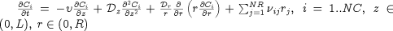
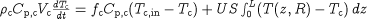

As in the case of array equations, there are two different ways of writing distributed equations in gPROMS: in an implicit manner or an explicit manner.
Implicit specification
The first exploits the concept of distributed expressions to define equations in an implicit manner. For example, the following equation sets the temperature throughout the interior of the reactor to a uniform value of 298K:
T(0|+:ReactorLength|-,0|+:ReactorRadius|-) = 298 ;
This compact form of the equation will be automatically expanded by gPROMS.
Explicit specification
An alternative way of writing the same equation is in an explicit form by making use of For constructs:
FOR z := 0|+ TO ReactorLength|- DO FOR r := 0|+ TO ReactorRadius|- DO T(z,r) := 298 ; END END
The two forms are completely equivalent, from the points of view of both the definition of the equation and its numerical solution. Thus,
which one you use depends on preference. However, the definition of some distributed equations require the extra flexibility afforded by the use
of the FOR construct. One such case involves equations which involve the independent Variables directly. Another case
arises with equations involving SIGMA and/or INTEGRAL operators that need to be applied only to
some of the domains of their arguments. For example, consider the chemical species conservation equations within the tubular
reactor. These are of the form:

These can be written in gPROMS as follows:
FOR i := 1 TO NoComp DO FOR z := 0|+ TO ReactorLength|- DO FOR r := 0|+ TO ReactorRadius|- DO $Concentration(i,z,r) = - Velocity * PARTIAL(C(i,z,r),Axial) + Dz * PARTIAL(C(i,z,r),Axial,Axial) + (Dr/r) * PARTIAL(r*PARTIAL(C(i,z,r),Radial),Radial) + SIGMA(Nu(i,)*r(,z,r)) ; END END END
Note how the range of application of each FOR construct is defined so as to ensure that the equation is enforced
only at the interior of the domain of interest. As a second example consider the energy conservation equation for the cooling jacket. This leads
to a lumped equation that is related to the reactor energy balance through an integral term describing the heat flux over the entire length of the
reactor:

This can be written in gPROMS as follows:
Rhoc * Cpc * Vc * $Tc = Fc * Cpc * ( TcIn - Tc ) + U * S * INTEGRAL( z := 0:ReactorLength ; T(z,ReactorRadius)-Tc) ;